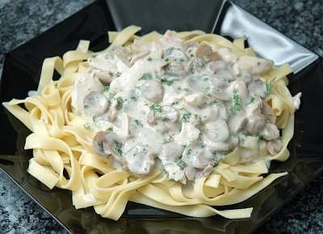

| Zutaten für 4 Personen: | |
| 300 g | Poulet, geschnetzelt |
| 2 Zweige | Petersilie |
| 1/8 Dose | Champignons |
| 2 EL | Fett |
| 1 EL | Mehl |
| 75 g | Halbrahm |
| 3/4 TL | Salz |
| 3/4 TL | Salbei |
| Pfeffer | |
| 2 TL | Couleur |
Aufgetautes Fleisch trocknen
Petersilie fein hacken
Die abgetropften Pilze blättrig schneiden.
Mehl und Sieb für die Bestäubung bereitstellen.
Fleisch bei grosser Hitze rasch anbraten.
Mehl darüber stäuben.
Champignons und Petersilie dazu geben. Gut mischen.
Halbrahm mit 2 dl Wasser glatt rühren. Würzen. Das Gericht 2 - 3 Minuten auf kleiner Hitze kochen lassen.
Couleur gibt der weissen Rahmsauce eine bräunliche Farbe. Man kann Couleur fertig kaufen oder auch selber zubereiten. Dazu rösten wir 200g Zucker, bis er verbrannt ist. Etwas auskühlen lassen.
Dann mit 2 dl kochendem Wasser ablöschen. Aufkochen, bis alles aufgelöst ist. In eine Flasche abfüllen und Teelöffelweise als Farbe benutzen.
Herbert Eigenmann, Code: PGC
Getestet am 10.3.96 von RE: Schmackhaft, auch ohne das Couleur-Zeug. Habe es am 5.5.2007 nochmals gekocht für die Fotografie. Salz und Pfeffer ging irgendwie in dem Rezept verloren. Das braucht es schon. Ist aber irgendwie 0815-Kantinen-Militärfrass. Bleibt bei 3 Punkten.
@LINKBACK_TAG@ @WAKELOCK@